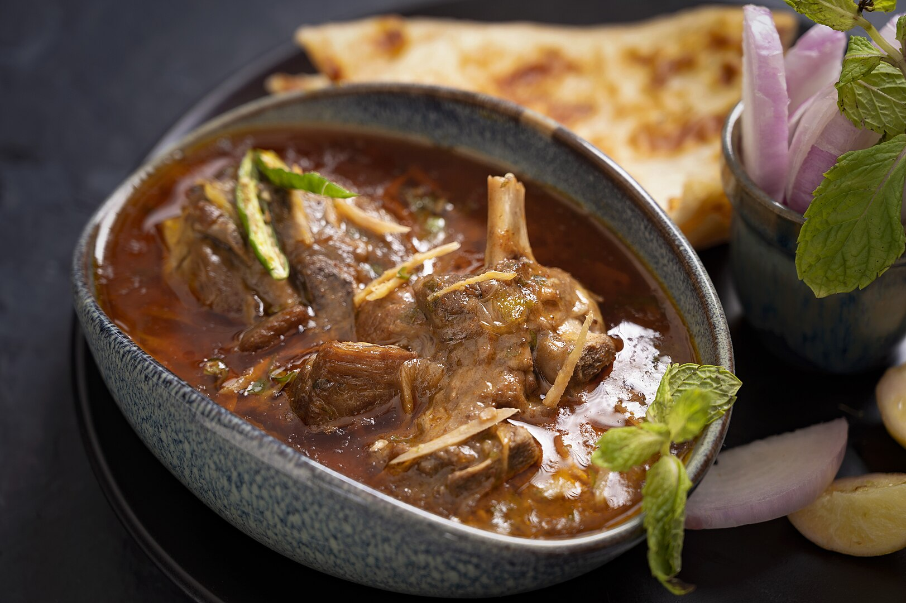

Nihari

About Nihari
Nihari is a rich and flavorful stew originating from the Indian subcontinent, believed to have been born in the royal kitchens of Lucknow during the Mughal era. It's traditionally made with slow-cooked meat, often beef shank or lamb, along with bone marrow. The meat is simmered for hours in a flavorful gravy infused with aromatic spices like cardamom, cloves, cinnamon, and black peppercorns.
The name "nihari" is derived from the Arabic word "nahar," meaning "morning," as it was historically consumed as a hearty breakfast dish. Its rich and comforting nature made it a popular choice for laborers, providing them with the energy needed for a long day of work. Today, nihari remains a beloved dish, often enjoyed during special occasions and festivals. It's typically served with naan or tandoori roti, allowing you to soak up every last drop of the flavorful gravy.
Ingredients:
- Beef shanks or lamb shanks (bone-in)
- Cardamom
- Cloves
- Cinnamon
- Black peppercorns
- Bay leaves
- Cumin powder
- Coriander powder
- Red chili powder
- Turmeric powder
- Garam masala
- Onion
- Ginger
- Garlic
- Yogurt
- Wheat flour
- Ghee or oil
- Water
- Salt
Baking Steps
- Marinate the Meat: Combine the meat with yogurt, ginger-garlic paste, and half of the powdered spices. Marinate for at least 2-3 hours, or overnight for better flavor.
- Sear the Meat: Heat ghee or oil in a pot. Sear the marinated meat on all sides until browned.
- Sauté the Aromatics: Add chopped onions, ginger, and garlic to the pot and sauté until golden brown.
- Add Spices and Water: Add the remaining powdered spices and whole spices to the pot. Pour in enough water to cover the meat.
- Simmer and Cook: Bring the mixture to a boil, then reduce heat and simmer, covered, for several hours, or until the meat is tender and falls off the bone. Stir occasionally to prevent sticking.
- Thicken the Gravy: Mix wheat flour with water to form a smooth paste. Gradually add the paste to the simmering gravy, stirring continuously to avoid lumps.
- Final Touches: Simmer for a few more minutes until the gravy reaches your desired consistency. Taste and adjust seasoning as needed.